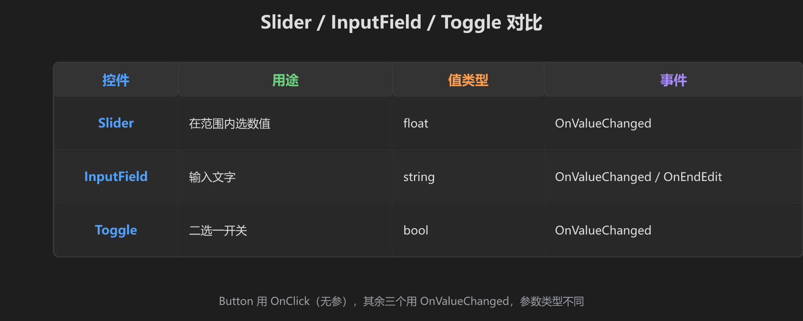
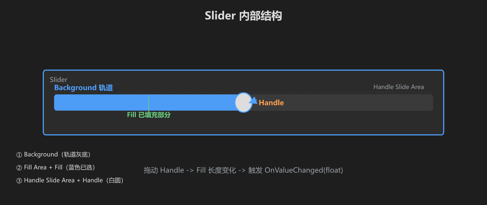
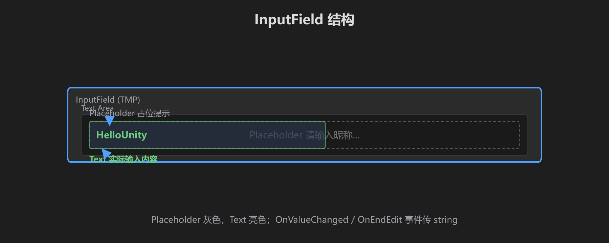
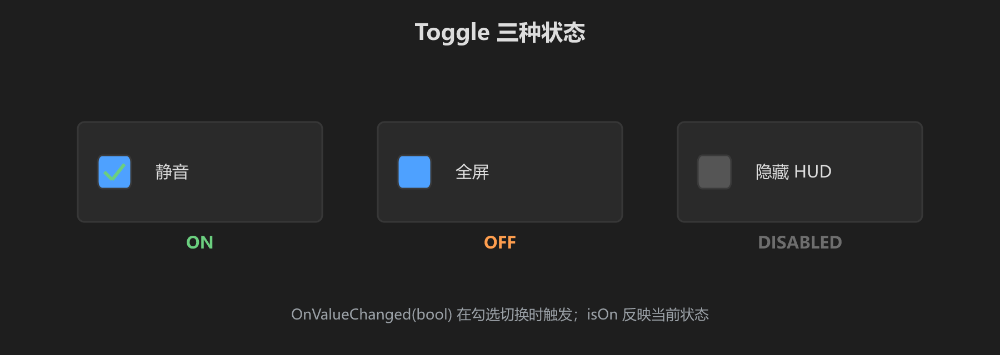
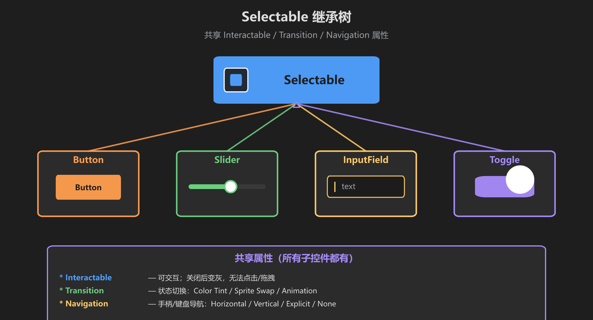

第 5 篇：Slider、InputField 和 Toggle
前几篇学了文字、按钮、图片。这一篇学三个更高级的交互控件：滑块、输入框、开关。它们是做设置界面和角色面板的基石。

图：Slider、InputField、Toggle 的用途、值类型、事件对比
1. Slider — 滑块
Slider 让玩家在一个范围内选择数值。音量调节、亮度、角色属性调整都用它。

图：Slider 的内部结构 — Background（轨道）、Fill（已填充部分）、Handle（可拖拽手柄）
Slider 的层级结构
创建 Slider（右键 Canvas → UI → Slider），你会得到：
▼ Slider
├─ Background ← 轨道的灰色背景
▼ Fill Area
└─ Fill ← 已填充的彩色部分
▼ Handle Slide Area
└─ Handle ← 可以拖拽的圆形手柄关键属性
| 属性 | 作用 | 举例 |
|---|---|---|
| Min Value | 最小值 | 音量设 0 |
| Max Value | 最大值 | 音量设 100 |
| Value | 当前值（运行时动态变化） | 初始设 50 |
| Whole Numbers | 勾上只取整数，不勾可以有小数 | 音量一般取整数 |
| On Value Changed | 值变化时触发的事件 | 见下方代码 |
OnValueChanged 传递的是 float 值。所以接收方法必须有一个 float 参数：public void OnVolumeChanged(float value)
2. InputField — 文本输入框
InputField 让玩家输入文字。登录名、聊天消息、搜索框都用它。

图：InputField 的结构 — Placeholder（占位提示）和 Text（实际输入内容）
InputField 的层级结构
▼ InputField (TMP)
├─ Text Area
│ ├─ Placeholder ← 没输入时显示的提示文字（灰色）
│ └─ Text ← 实际输入的文字
关键属性
| 属性 | 作用 |
|---|---|
| Text | 当前输入的文本（代码里通过 .text 读写） |
| Character Limit | 最多输入多少字符（0=不限） |
| Content Type | Standard（普通）/ Password（显示***）/ Integer（只能数字）等 |
| Placeholder | 占位文字（子物体 Placeholder 上的 Text 组件） |
| On Value Changed | 每次文字变化都触发（传 string） |
| On End Edit | 输入完成时触发（按回车或点别处，传 string） |
3. Toggle — 开关
Toggle 是二选一的开关。静音、全屏、显示 FPS 都用它。

图：Toggle 的 ON / OFF / DISABLED 三种状态
Toggle 的层级结构
▼ Toggle
├─ Background ← 开关的背景框
│ └─ Checkmark ← 打勾图标（勾上时显示）
└─ Label ← 旁边的说明文字关键属性
| 属性 | 作用 |
|---|---|
| Is On | 当前是否打开（代码里 .isOn 读写） |
| On Value Changed | 状态变化时触发，传 bool 值 |
4. 它们都是 Selectable 家族

图：Button、Slider、InputField、Toggle 都继承自 Selectable，共享 Interactable、Transition、Navigation 等属性
因为它们都继承自 Selectable，所以共享以下属性：
- Interactable — 关了就变灰，无法交互
- Transition — Color Tint / Sprite Swap / Animation
- Navigation — 手柄/键盘导航
5. 练手时间 — 做一个设置面板
目标：做一个设置面板，包含音量滑块、昵称输入框、全屏开关。所有值变化时 Console 输出。
创建 UI
- 创建 Panel（半透明背景 400x350，居中）
- 在 Panel 下创建标题 Text：「设置」（字号 24，白色粗体）
- 创建 Text：「音量」+ Slider（Min=0, Max=100, Value=50）
- 创建 Text：「昵称」+ InputField (TMP)（Placeholder 写"请输入昵称"）
- 创建 Toggle，Label 写「全屏模式」
写脚本
using UnityEngine;
using UnityEngine.UI;
using TMPro;
public class SettingsPanel : MonoBehaviour
{
public Slider volumeSlider;
public TMP_InputField nicknameInput;
public Toggle fullscreenToggle;
// Slider 事件 — 必须有一个 float 参数
public void OnVolumeChanged(float value)
{
Debug.Log("音量: " + value);
}
// InputField 事件 — 必须有一个 string 参数
public void OnNicknameChanged(string text)
{
Debug.Log("昵称: " + text);
}
// Toggle 事件 — 必须有一个 bool 参数
public void OnFullscreenToggled(bool isOn)
{
Debug.Log("全屏: " + (isOn ? "开" : "关"));
}
}绑定事件
- 在 Canvas 上创建空物体
SettingsPanel，挂此脚本 - 把 Slider、InputField、Toggle 分别拖到脚本的对应字段
- Slider 的 OnValueChanged → SettingsPanel → OnVolumeChanged
- InputField 的 OnValueChanged → SettingsPanel → OnNicknameChanged
- Toggle 的 OnValueChanged → SettingsPanel → OnFullscreenToggled
注意区别：Button 用 OnClick，Slider / InputField / Toggle 用 OnValueChanged。参数类型也不一样：Button 无参或简单类型，Slider 传 float，InputField 传 string，Toggle 传 bool。
6. VRChat 世界里的差异
上面这段是 普通 Unity 编辑器里的做法：直接把 OnValueChanged 绑定到脚本方法，方法带 float / string / bool 参数。
但 VRChat 世界里，UI 事件不能随意调用任意 MonoBehaviour 方法。官方允许的方式通常是：把脚本换成 UdonSharp，在 Inspector 里用 OnValueChanged / OnClick → UdonBehaviour.SendCustomEvent("方法名")。方法名必须写成 public、且不带参数，值自己在方法里从组件上读。
// VRC 世界的设置面板脚本（UdonSharp 版）
using UdonSharp;
using UnityEngine;
using TMPro;
using UnityEngine.UI;
public class SettingsPanelVRC : UdonSharpBehaviour
{
public Slider volumeSlider;
public TMP_InputField nicknameInput;
public Toggle fullscreenToggle;
// 这三个方法不接参数，因为 OnValueChanged 在这里只是 SendCustomEvent
public void OnVolumeChanged()
{
Debug.Log("音量: " + volumeSlider.value);
}
public void OnNicknameChanged()
{
Debug.Log("昵称: " + nicknameInput.text);
}
public void OnFullscreenToggled()
{
Debug.Log("全屏: " + (fullscreenToggle.isOn ? "开" : "关"));
}
}在 VRChat 项目里，如果 UI 事件面板里找不到你自定义脚本的方法，先确认：① 用的是 UdonBehaviour / UdonSharp；② 方法名是 public；③ 事件绑定选的是 SendCustomEvent 并填了完全一致的方法名。
自检清单
- [ ] 拖拽 Slider，Console 输出音量值
- [ ] 在 InputField 里打字，Console 输出文字
- [ ] 点击 Toggle，Console 输出开关状态
- [ ] 三个控件都有 Interactable 属性，关掉试试效果